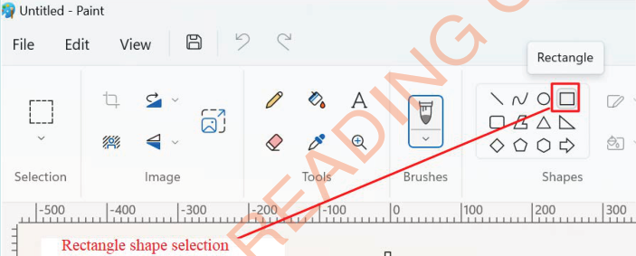
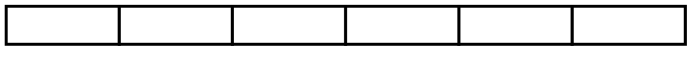
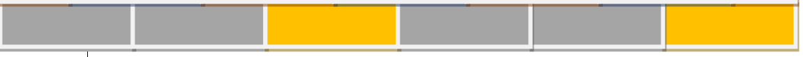

Activity 4
Drawing a brick wall with different colour patterns
Steps
1.
Select the rectangle tool by clicking/pressing on ‘Rectangle’ as shown/identified in Figure 13.

2.
Draw six bricks and arrange them in a row as shown in Figure 14.

3.
Colour the layer with gray and yellow as shown in Figure 15.
